walter:
- 处理走势基本方法：1. 按中枢来； 2. 纯粹按走势类型来; 3, 前两者结合使用。
- c段不一定创新高，没有规定abc三段，c一定比A高的。无论盘整背驰、背驰，都是比较其力度，如果连新高都创不出，那力度就最弱，当然更不行。这时候，根本连MACD的辅助都没必要。MACD只要是辅助创新高的情况。
- 任何板块都分一、二、三线，你回想一下去年酒的运动，先一、后二、最后连沱牌这类三线都动起来，就差不多大调整了。酒大调整完还要上的，像去年的有色，今年一样表现。
注1、同级别分解规则：在某级别中如30分钟级别，不定义中枢延伸，允许该级别上的盘整+盘整连接；与此同时，规定该级别以下的所有级别，都允许中枢延伸，不允许盘整+盘整连接；至于该级别以上级别，根本不考虑，因为所有走势都按该级别给分解了。如果资金规模大，可以设几个级别，分区卷钱。
注2：空读”(2007-03-22 16:03:48)的提问“某一级别的一段走势,在当下,如何判断走势是否结束?”
注3：stone”的5个提问关于盘整背驰如何判断，C段不必然创新高ABC三段中C不一定比A段高；三买卖点的把握。
正文
站在纯操作的角度，由于任何买卖点，归根结底都是某级别的第一类买卖点，因此，只要搞清楚如何判断背驰，然后选好适合的级别，当该级别出现底背驰时买入，顶背驰时卖出，就一招鲜也足以在市场上混好了。不过，任何事情都应该究底穷源，这有点像练短跑，跑到最后，提高0.01秒都很难，所以越往后，难度和复杂程度都会越来越深，如果一时啃不下来，就选择可以把握的，先按明白的选择好操作模式，等市场经验多了，发现更多需要解决的问题，有了直观感觉，再回头看，也不失为一种学习的办法。当然，都能看懂并能马上实践，那最好。
前面谈了有关走势类型连接结合的多义性问题，虽然已多次强调多义性不是含糊性，但不少人依然产生误解，认为走势就可以胡乱分解了，这是不对的。多义性是与走势的当下性密切相关的，但对已完成走势类型连接进行相应的分解，就如同解问题设定不同的参数，虽然参数的设定有一定的随意性，但一个好的参数设定，往往使得问题的解决变得简单。根据结合律，如何选择一种恰当的走势分解，对把握当下的走势极为关键。显然，一个好的分解，其分解规则下，必须保证分解的唯一性，否则这种分解就绝对不可能是好的分解。其中，最简单的就是进行同级别分解。所谓同级别分解，就是把所有走势按一固定级别的走势类型进行分解。根据“缠中说禅走势分解定理”，同级别分解具有唯一性，不存在任何含糊乱分解的可能。
同级别分解的应用，前面已多有论述，例如，以30分钟级别为操作标准的，就可用30分钟级别的分解进行操作，对任何图形，都分解成一段段30分钟走势类型的连接，操作中只选择其中的上涨和盘整类型，而避开所有下跌类型。对于这种同级别分解视角下的操作，永远只针对一个正在完成着的同级别中枢，一旦该中枢完成，就继续关注下一个同级别中枢。注意，在这种同级别的分解中，是不需要中枢延伸或扩展的概念的，对30分钟来说，只要5分钟级别的三段上下上或下上下类型有价格区间的重合就构成中枢。如果这5分钟次级别延伸出6段(就是加上原来3段达到9段)，那么就当成两个30分钟盘整类型的连接，在这种分解中，是允许盘整+盘整情况的。注意，以前说不允许“盘整+盘整”是在非同级别分解方式下的，这在下面的课中会讲到，所以不要搞混了。
有人可能马上要问，同级别分解的次级别分解是否也是同级别分解的。答案是，不需要。这里在思维上可能很难转过弯，因为一般人都喜欢把一个原则在各级别中统一运用，但实际上，你完全可以采取这样的分解形式，就是只要某级别中进行同级别分解，而继续用中枢扩展、延伸等确定其次级别，这里只涉及一个组合规则的问题，而组合的规则，是为了方便操作以及判断，只要不违反连接的结合律以及分解的唯一性，就是允许的，而问题的关键在于是否明晰且易于操作。
说得深入一点，走势分解、组合的难点在于走势有级别，而高级别的走势是由低级别构成的，处理走势有两种最基本的方法，一种是纯粹按中枢来，一种是纯粹按走势类型来，但更有效的是在不同级别中组合运用。因此，完全合理、不违反任何理论原则的，可以制定出这样的同级别分解规则：在某级别中，不定义中枢延伸，允许该级别上的盘整+盘整连接[注:按中枢来]；与此同时，规定该级别以下的所有级别，都允许中枢延伸，不允许盘整+盘整连接[注:按走势类型来，如出现中枢延伸如a+B+b盘整走势类型时可用中枢震荡力度分析，如果是趋势类型就用a+A+b+B+c来分析]；至于该级别以上级别，根本不考虑，因为所有走势都按该级别给分解了。
按照以上的同级别分解规则，用结合律很容易证明，这种分解下，其分解也是唯一的。这种分解，对于一种机械化操作十分有利。这里，无所谓牛市熊市，例如，如果分解的级别规定是30分钟，那么只要30分钟上涨就是牛市，否则就是熊市，完全可以不管市场的实际走势如何，在这种分解的视角下，市场被有效地肢解成一段段30分钟走势类型的连接，如此分解，如此操作，如此而已。 注意，这种方法或分解是可以结合在更大的操作系统里的。例如，你的资金有一定规模，那么你可以设定某个量的筹码按某个级别的分解操作，另一个量的筹码按另一个更大级别的分解操作，这样，就如同开了一个分区卷钱的机械，机械地按照一个规定的节奏去吸市场的血。这样不断地机械操作下去，成本就会不断减少，而这种机械化操作的力量是很大的。
其实，根本无须关心个股的具体涨幅有多少，只要足够活跃，上下震荡大，这种机械化操作产生的利润是与时间成正比的，只要时间足够长，就会比任何单边上涨的股票产生更大的利润。甚至可以对所有股票按某级别走势的幅度进行数据分析，把所有历史走势都计算一次，选择一组历史上某级别平均震荡幅度最大的股票，不断操作下去，这样的效果更好。这种分解方法，特别适合于小资金又时间充裕的进行全仓操作，也适合于大资金进行一定量的差价操作，更适合于庄家的洗盘减成本操作。当然，每种在具体应用时，方法都有所不同，但道理是一样的。
具体的操作程式，按最一般的情况列举如下，注意，这是一个机械化操作，按程式来就行：
不妨从一个下跌背驰开始，以一个30分钟级别的分解为例子，按30分钟级别的同级别分解，必然首先出现向上的第一段走势类型，根据其内部结构可以判断其背驰或盘整背驰结束点，先卖出，
然后必然有向下的第二段，这里有两种情况：1、不跌破第一段低点，重新买入，2、跌破第一段低点，如果与第一段前的向下段形成盘整背驰，也重新买入，否则继续观望，直到出现新的下跌背驰。
在第二段重新买入的情况下，然后出现向上的第三段，相应面临两种情况：1、超过第一段的高点；2、低于第一段的高点。对于第二种情况，一定是先卖出；第一种情况，又分两种情况：1、第三段对第一段发生盘整背驰，这时要卖出；2、第三段对第一段不发生盘整背驰，这时候继续持有。 这个过程可以不断延续下去，直到下一段向上的30分钟走势类型相对前一段向上的走势类型出现不创新高或者盘整背驰为止，这就结束了向上段的运作。向上段的运作，都是先买后卖的。一旦向上段的运作结束后，就进入向下段的运作。向下段的运作刚好相反，是先卖后买，从刚才向上段结束的背驰点开始，所有操作刚好反过来就可以。
walter：
- 从一个下跌背驰买入, 根据其内部结构可以判断其背驰或盘整背驰结束点，先卖出；
- 然后必然有向下的第二段，这里有两种情况：
- 不跌破第一段低点，重新买入
- 跌破第一段低点，如果与第一段前的向下段形成
盘整背驰，也重新买入， - 继续观望，直到出现新的下跌背驰。
- 在第二段重新买入的情况下，然后出现向上的第三段，相应面临两种情况：
- 超过第一段的高点；
- 第三段对第一段发生
盘整背驰，这时要卖出； - 第三段对第一段不发生
盘整背驰，这时候继续持有。
- 第三段对第一段发生
- 低于第一段的高点。
- 一定是先卖出；
- 超过第一段的高点；
这个过程可以不断延续下去，直到下一段向上的30分钟走势类型相对前一段向上的走势类型出现不创新高或者盘整背驰为止，这就结束了向上段的运作。
图例如下： 图例一 第一步：不妨从一个下跌背驰开始，以一个30分钟级别的分解为例子，按30分钟级别的同级别分解，必然首先出现向上的第一段走势类型，根据其内部结构可以判断其背驰或盘整背驰结束点，先卖出。
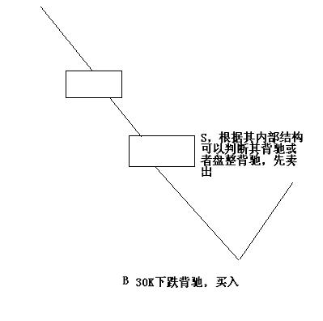
第二步：然后必然有向下的第二段，这里有两种情况：1、不跌破第一段低点，重新买入，2、跌破第一段低点，如果与第一段前的向下段形成盘整背驰，也重新买入，否则继续观望，直到出现新的下跌背驰。
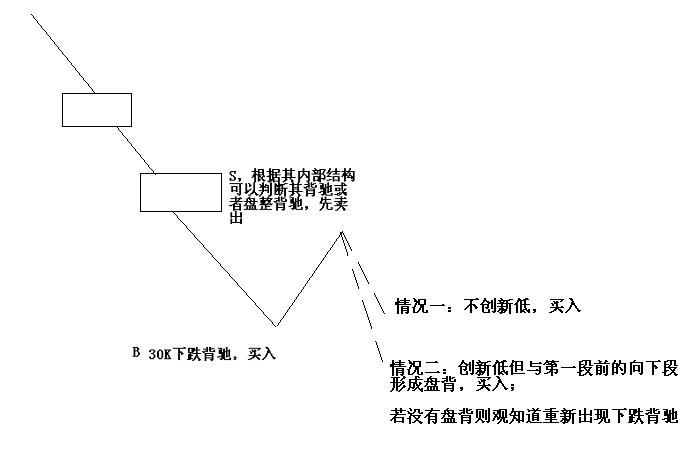
第三步：在第二段重新买入的情况下，然后出现向上的第三段，相应面临两种情况：1、超过第一段的高点；2、低于第一段的高点。对于第二种情况，一定是先卖出；第一种情况，又分两种情况：1、第三段对第一段发生盘整背驰，这时要卖出；2、第三段对第一段不发生盘整背驰，这时候继续持有。
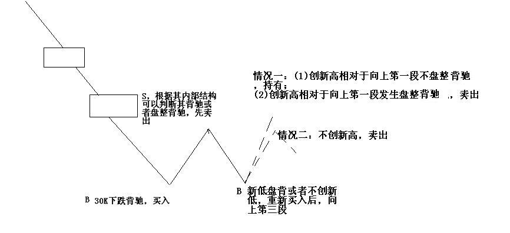
注意：这是一个机械化操作，按程式来就行： 不妨从一个“下跌背驰”开始，以一个30分钟级别的分解为例子，按30分钟级别的同级别分解，
【一】、必然首先出现向上的“第一段”走势类型， 根据其内部结构可以判断其背驰或盘整背驰结束点，先卖出，
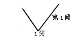
【二】、然后必然有向下的“第二段”， 这里有两种情况：
【1】、不跌破“第一段低点”，重新买入，
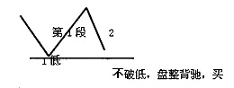
【2】、跌破“第一段低点”，如果与第一段“前的向下段”形成盘整背驰，也重新买入，
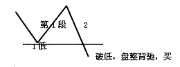
【3】、否则【没形成盘整背驰，不买】，继续观望，直到出现新的下跌背驰。
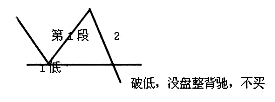
【三】、在第二段重新买入的情况下，然后出现向上的“第三段”， 相应面临两种情况：
【1】、“超过”第一段的高点；
【2】、“低于”第一段的高点。
【2.1】、对于第二种【低于第一段的高点】情况，一定是先卖出；【操作同24课盘整背驰1——不升破中枢高点（ZG）】
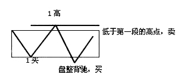
第一种情况【超过第一段的高点】，又分两种情况：
【1.1】、第三段对第一段发生盘整背驰，这时要卖出；【操作同24课盘整背驰2——升破中枢高点（ZG）】

【1.2】、第三段对第一段不发生盘整背驰，这时候继续持有。
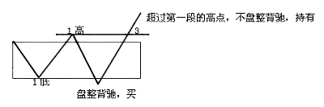
这个过程可以不断延续下去， 直到“下【后】一段”向上的30分钟走势类型， 相对“前一段”向上的走势类型，
【1】出现“不创新高”，
【2】或者盘整背驰为止，
这就结束了向上段的运作。
向上段的运作，都是先买后卖的。一旦向上段的运作结束后，就进入向下段的运作。向下段的运作刚好相反，是先卖后买，从刚才向上段结束的背驰点开始，所有操作刚好反过来就可以。
图例三: 不妨从一个下跌背驰开始，以一个30分钟级别的分解为例子，按30分钟级别的同级别分解，
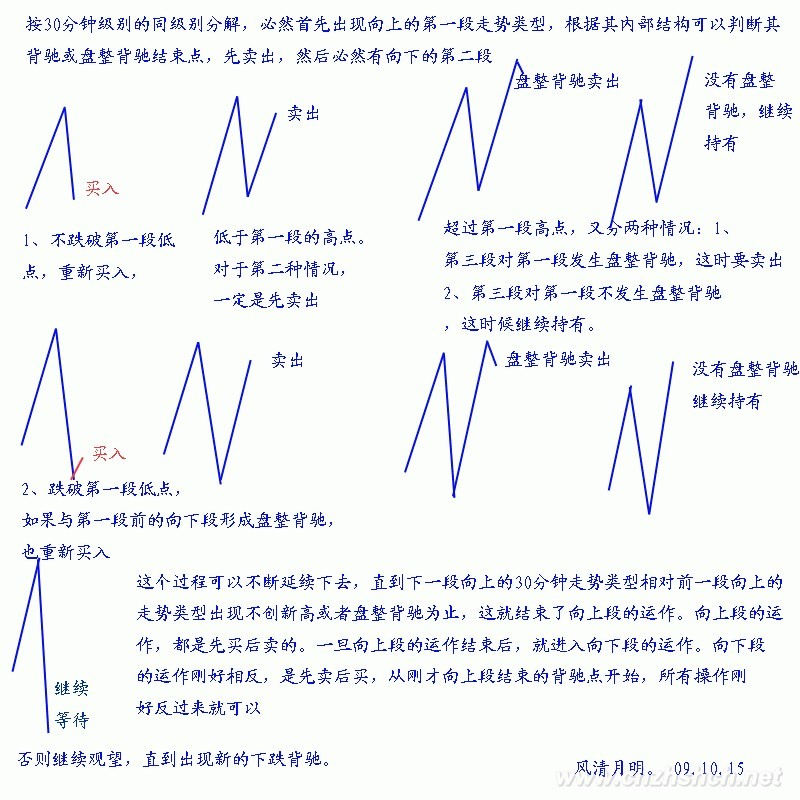
图例4：
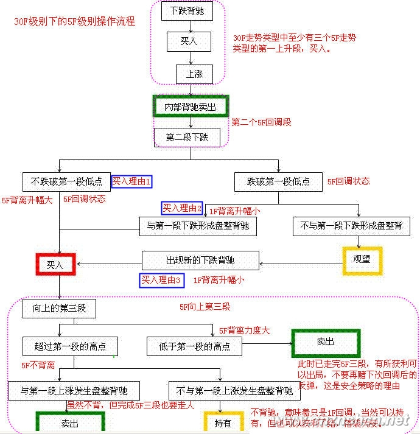
每日解盘(2007-03-21 15:24:07)
大盘走势没什么可说的，如果不会看的，就看好5日线，5日线不破，什么问题都没有。当然，汉奸还会发难的，汉奸特别喜欢周四发难，本ID很欢迎汉奸出手，汉奸最好就把货都倒到3000点以下去，然后离开中国去美国当孙子。
中行今天继续休息等5日线上来，这种大盘股票，不可能太远离5日线，毕竟金融股是汉奸的老巢，上攻过激汉奸会发情的，到时候呕吐一地，让大家恶心就不好了。
各股没什么可说的，板块依然那些板块，个股依然那些个股。当然，除了那14只股票，联通、中行，本ID最近又独自去偷欢了几只，用本ID减成本的方法，最终的结果就是钱越来越多，而筹码不见少，所以必须多看几个仓才能满足。具体就不说，基本都是北京本地股，熟人多，消息也有保障。
那14只个股，元旦前后的前8只，都基本翻倍了，有些已经开始向翻两倍进军，其他的也会跟上来的，关键是你能否按本ID的建议，持有并用部分打短茶，如果能，那你的成本应该不断减，这样就永远不败了。
周四、周五，血战少不了，就看汉奸如何出手了，本ID再等着，大不了再震荡一次，本ID陪着汉奸玩20年，一直玩上30000点，时间多的是，本ID不急。 (2007-03-21 15:24:07)
每日解盘 (2007-03-22 15:29:02)
=====《论语》详解：给所有曲解孔子的人（59）486e105c010009c9=====
对汉奸的周四发难，昨天已经明说。汉奸总是很听话的，而本ID的股票，除了些新进的北京股，今天基本上一大早就开始主动调整，就是不想让汉奸有发力的机会。汉奸也特没力，只能选择尾盘偷袭，一点新意都没有。后面三天特别关键，只要这三天能在前期高位上收住，那突破的有效性就有保障了，很多心态不稳的人也会重新回来。技术上，前几天已经强调了127与224连线的压力，今天主要就是受阻在这线上，这线的有效突破，才是大盘能走出一轮行情的关键。
现在的走势很微妙，汉奸也有机会，毕竟现在很多人的心态不稳，但汉奸的机会并不会对本ID造成任何损害，本ID的原则是，稳打不冒进，如果机会不成熟，就反复震荡等机会成熟，绝对不给汉奸好的下手机会。不过，现在有些多头太冒进、太急功近利，并不是什么好事，本ID只管好自己这一拨就可以，别人爱干什么可管不住。只要实力不断增长，试看几年后是谁的天下？ (2007-03-22 15:29:02)
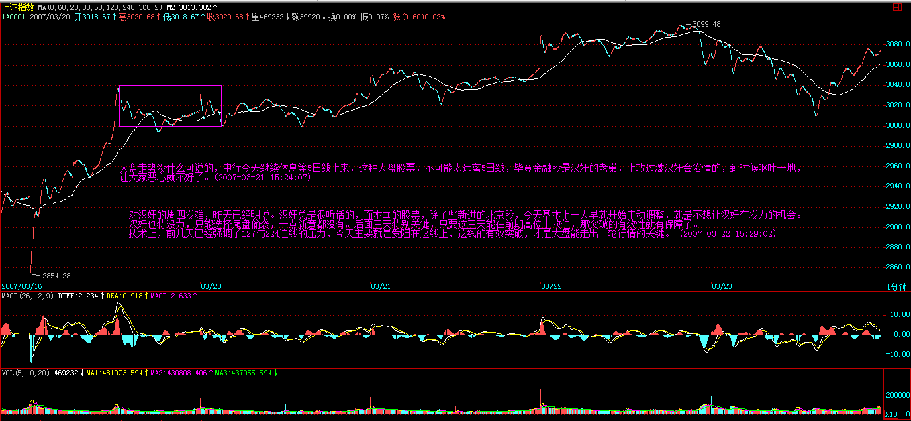 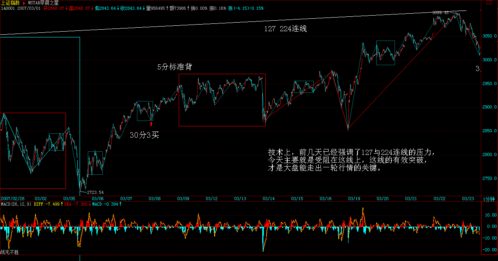
[匿名] 勤学好问 2007-03-21 16:05:19
可能楼主没看到，就再发一遍 楼主，从大盘日线上看，macd是不是已经算双０轴回试了？ 有点形成日线上涨背驰的可能，对吗？
==
可能当然有，124与227的连线，现在也没突破，所以汉奸在技术上是有发难的条件的。大盘从从去年上来，算上去年5月份后的日中枢，也有两个了，上涨形态出现背驰也是很合理的，除非能在上面再延伸一个日中枢。形态是走出来的，没必要预测什么，而且大盘指数并不太重要。元旦到现在，指数没涨多少，但为什么本ID元旦前后说的8只股票都基本翻倍了？ (2007-03-21 16:13:10)
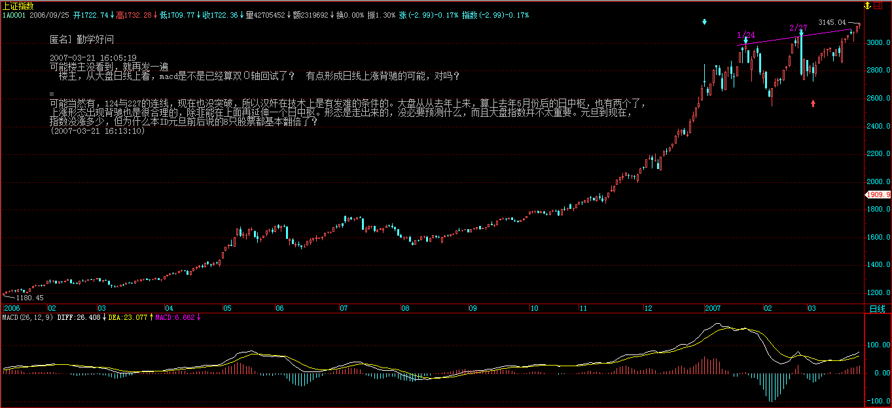
[匿名] 听缠说禅 2007-03-22 15:36:42
禅妹，这样的尾盘杀跌，没有你我们靠什么预料？又怎样躲开？今天我的股票都走得很好，大盘跌也跟着跌，没出来啊。。。
==
124和227的连线不是一次能突破的，就算你看看1分钟或5分钟的MACD，也知道这里会有一个小的盘整背驰。1430后，上海、深圳走势背离，这就是最好的信号。 (2007-03-22 15:42:32)
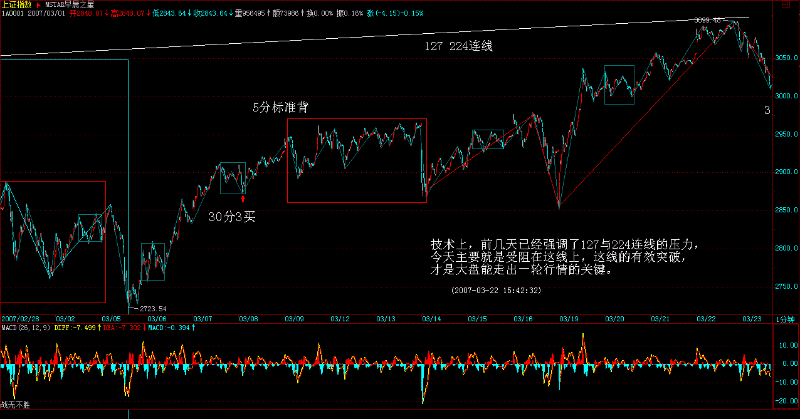 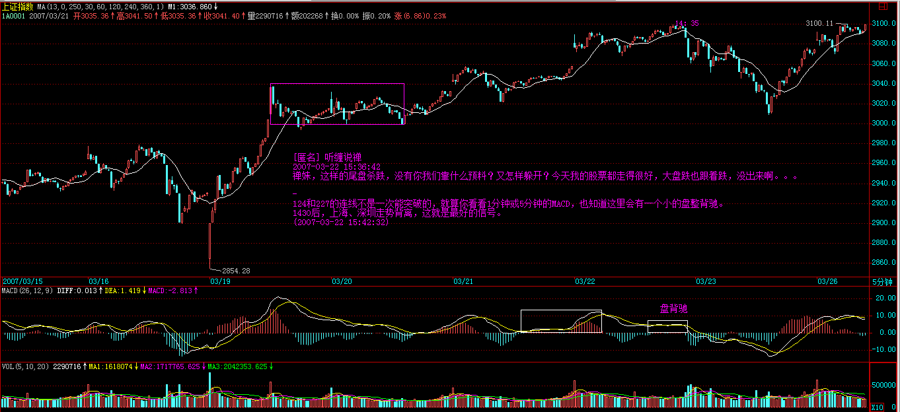
两只老虎 2007-03-22 16:00:30
炼铁设备
2007-03-22 15:57:19 127与224连线的压力
================= 请问在那里看？
========= 同问？
==
把两天高点连起来就有了，每天都在变化，不断往上去，在图形上划线就能看到。 (2007-03-22 16:05:15)
[匿名] 草草 2007-03-21 15:41:09
我终于明白了，老师的理论今天又浅显了，以前总是为了买点错失了做短差的机会，现在知道了，也就是这样，当一个股票突破中枢上去，如果没有背驰是可以继续持有的，出现了背驰就卖，回来不破中枢高点又买，然后上去不过中枢延伸的b段又可以卖了，往返操作，就可以了哦
==
没背驰，就意味着走势类型没结束，还可以继续下去，当然没必要操作了。 (2007-03-21 15:44:04)
[匿名] stone 2007-03-21 15:41:18 比如一个30分钟的盘整（组成一个30分钟中枢）由ABC三段5分钟走势构成，C段正在走，请问： 1。盘整背驰的判断，是看5分钟还是30分钟的图？如果看5分钟图，是不是就是对C段内段进行判断？如何对A段和C段判断？ 2。记得LZ说过，黄白线刚上0轴，是不能判断背驰的，是不是针对盘整背驰的？
==
如果用MACD判断，看5分钟图一般情况下比较清楚。比较当然是A和C比，当然还可以参考C内部结构确定精确位置，这个背驰段的区间套方法是一个道理。
(2007-03-21 16:24:40)
[匿名] stone 2007-03-21 16:14:10
lz能不能一个问题一个问题给说说清楚？ 比如第三类买点，第一次次级别回抽回到中枢，第二次没回，算不算？很多人有这个疑问 再比如上面问的盘整背驰，按LZ的文章，是不是用12日上海的5分钟图，对12日上海的30分钟盘整的一段进行盘整背驰分析？
==
第三买买点怎么可能有第一次次级别回抽回到中枢的可能？能回到中枢就不是第三类买点了，第二次没回，那才是第三类买点。 (2007-03-21 16:19:02)
[匿名] stone 2007-03-21 16:23:48
———问题是你定义过第三类买点必须是第一次回抽才行，
另外能不能回答一下我的盘整背驰问题，谢谢
==
你的理解出现问题，如果跌回中枢里，连回抽都算不上，还是围绕中枢的震荡。第一次回抽不到中枢，这是第三类买卖点，上去再回抽，如果同样不回到中枢里，但这就不是第三类买卖点了。第三类买卖点，和中枢延伸的结束是一回事情，关于中枢的延伸结束，前面都有严格的数学定义，可参考。 (2007-03-21 16:29:42)
[匿名] stone 2007-03-21 16:29:03
LZ文章——盘整中往上的情况为例子，往下的情况反之亦然。如果C段不破中枢，一旦出现MACD柱子的C段面积小于A段面积，其后必定有回跌。比较复杂的是如果C段上破中枢，但MACD柱子的面积小于A段的，这时候的原则是先出来，其后有两种情况，如果回跌不重新跌回，就在次级别的第一类买点回补，刚好这反而构成该级别的第三类买点，反之就继续该盘整。注：此段话24课正文盘整背驰的三种情况分析
C段要创新高，不可能不破中枢啊？这个地方如何理解？
==
C段不一定创新高，没有规定ABC三段，C一定比A高的。无论盘整背驰、背驰，都是比较其力度，如果连新高都创不出，那力度就最弱，当然更不行。这时候，根本连MACD的辅助都没必要。MACD只要是辅助创新高的情况。 (2007-03-21 16:38:40)
[匿名] 新手 2007-03-21 16:49:31
匿名] stone
2007-03-21 16:14:10 lz能不能一个问题一个问题给说说清楚？ 比如第三类买点，第一次次级别回抽回到中枢，第二次没回，算不算？很多人有这个疑问
缠主：大盘2月28日13日13：37分和13：51分缠主不是说两次回抽才形成第三类买点么？前一次有重叠，后一次才真正的算第三类买点，这不是两次么？
==
两次回抽是指次次级别，一个次级别的走势，当然需要至少三段次次级别的走势，这样当然就有两次回抽，但站在次级别上看，次次级别的第二次回抽才是次级别回抽的完结，那时候次级别才走势完美。 (2007-03-21 16:56:34) 缠论第38课(3/21)：走势类型连接的同级别分解
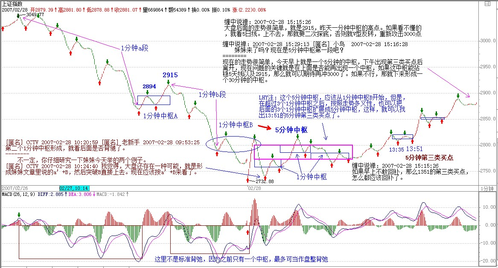
空读 2007-03-22 15:35:59
缠老大好,某一级别的一段走势,在当下,如何判断走势是否结束? 比如30分钟级别第二段向上的走势,如果没到达到第一段的高点, 稍微拐头时,从何判断是小跌一下形成一个小级别中枢后再冲高,还是已经走完,一直跌下去了.拐头时下跌多少才能判断出来?要形成低级别的第三类卖点才能确定吗?
==
背驰、盘整背驰，都是走势分段的依据，所谓第三类买卖对盘整结束的确认，最终也要看其内部结构的背驰、盘整背驰。不是等真跌了才问卖不卖，而是涨的时候一旦进入背驰的区间套里，就要陆续走，当然，资金小的可以等到最后几个价位，资金大的就不可能了。第一卖点没走，就要在第二卖点走。如果等到第三卖点，估计都跌很多了。宁愿卖早了，坚决不要卖迟了，股票都是废纸，有钱还怕买不到废纸。 (2007-03-22 16:03:48)
[匿名] touchnet 2007-03-22 15:57:49
老大昨天的文章 1、不跌破第一段低点，重新买入
请问老大，这个“不跌破”是靠次别判断吗？
==
对，需要该段内部结构的确认。
2、分解定理，可以分解成同级别的盘整与趋势
这个盘整与趋势中的中枢是同一级别吧，不是盘整中的中枢大一级别？
==
同级别分解，当然都是同级别的中枢。不存在盘整中枢更大的问题。更大就分解成小的，这才叫同级别分解。
3、级别分解中的起点问题，走势中任意一高低点都可做一个走势类型的分界点吗？
==
当然不是，必须是前面走势类型的结束点。 (2007-03-22 16:47:52)
[匿名] 中枢 2007-03-22 16:39:26
[匿名] 中枢 2007-03-22 16:35:53
缠师：从30分钟底背驰开始，向上的第一段假如是盘整，会表现为哪种形态呢？是a+A+b，还是单独的A呢？他们两者中枢的方向是不一样的，第一个下上下，第二个上下上. 这个问题不解决，判断起来很困难啊
补充：判断困难的原因是, 比方A=a1+a2+a3, 当走到a+a1+a2时，我不知道已经形成一个中枢了，还是要等到后面的a3。
==
这个问题，刚好是明天文章要说到的，请耐心等一天。 (2007-03-22 16:56:45)
[匿名] 中枢
2007-03-22 16:59:48 终于等到老师回复了，多谢！虽然暂时没答案：）
另外问个问题，看了那天对背驰的确切定义，前面多义性讲的a+A+b+B+c，ac不是必然有的，并不是说ac可以不要，只是说可以看成AB的延伸，对吧？
==
也可以没有，例如两个单纯的中枢，中间是一个跳空缺口。 (2007-03-22 17:02:06)
[匿名] 酒吧心情
2007-03-22 15:46:10 不过，现在有些多头太冒进、太急功近利，并不是什么好事
==
JJ的这句话说到我心里去了.
今天的状况就是这样,太激进了,很容易被偷袭.
我觉得还是学学老毛,农村包围城市,抗日抗了8年,解放用了3年,
难道股市不能多等个几天?
希望JJ给予点评…
==
本ID现在的能力只能管好自己的地盘，像中行这几天一直不动，其实就是对大盘最大的贡献，就算汉奸敢在这个位置开始对中行发难，下去的空间能有多少？毕竟中行有业绩增长、奥运等特别支持。现在关键是要稳定人心，绝大多数的人都怕假突破，这就是汉奸的机会，所以一定不能急，不过，市场不是本ID一个人的，有些人的钱，来路不明，急着挣一把就跑，这种人是需要市场好好给点教训。 (2007-03-22 16:16:59)
[匿名] 新浪网友 2007-03-22 16:50:18
请问博主.为什么工行是老大,还排在中行后面呢?
==
工行本来就不应该比中行贵，以前只是因为新股，汉奸跑进来容易。无论业绩、盘子、管理水平，工行哪一点比得上中行？ (2007-03-22 16:52:21)
Anytime 2007-03-21 15:26:33
有些药的业绩不好，一直亏损，可以关注吗？
==
任何板块都分一、二、三线，你回想一下去年酒的运动，先一、后二、最后连沱牌这类三线都动起来，就差不多大调整了。酒大调整完还要上的，像去年的有色，今年一样表现。 (2007-03-21 15:30:14)
[匿名] 新手 2007-03-21 15:28:43
老大: 600343走的实在是太软了,还有戏吗?
==
343是一个汉奸基金拿得特别多，让他低位吐点出来有什么不好的？中线没问题。999如果不让那汉奸基金在10元上吐了数以千万股，现在能走成这样吗？
(2007-03-21 15:32:10)
[匿名] 漂泊 2007-03-21 15:44:15
禅主，今年的电力蓝筹股怎么还不见启动啊？是不是金融股后才是电力啊
==
电力是另一波人在搞，本ID去年负责喝酒，今年负责吃药，顺便再为以后储藏点环保、军工、农业、旅游、科技之类的，电力、汽车这些，本ID可顾不过来，国家又不资助本ID一万几千亿的，不可能把所有板块都搞了。 (2007-03-21 15:50:15)
[匿名] 荷塘 2007-03-21 15:47:53
915感觉在今天1325时5分钟背驰，想做短差但又举棋不定，请LZ指教。
==
本ID这里有一个规矩，就是本ID说的那14只股票，都不具体分析的，因为不能又当球员又当裁判，连黄健翔之流的活也抢来干，这样太不地道了。这10几个股票的具体问题，可以问其他人，其他人可以回答。 (2007-03-21 15:53:20)
[匿名] 首钢股份
2007-03-21 15:45:21 女王！汽车股今后是否还有发展？今天000800翻番了我跑光了。
昨天在平安大道看到一个漂亮mm开一辆奥迪Q7越野车，突然想起女王来……
===
其实更好跑一半，变成0成本，这样能获取更大的利益。毕竟很多汽车都是刚上路的。 (2007-03-21 15:59:04)
[匿名] 白玉兰 2007-03-21 15:57:30
请教妹妹有色金属锌的行情好吗？
==
有色金属的大牛市还要延续很长时间，短线的震荡改变不了大趋势。国内锌期货很快也有了，疯一阵是免不了了。不过期货风险比股票大，如果没有足够的时间与经验，还是少碰为好。 (2007-03-21 16:05:15)
[匿名] 草草
2007-03-21 15:59:41 老师，你是不是在群里啊，我怎么觉得老师在群里啊；老师好像知道我们想什么！！！
==
对不起，本ID没有QQ，平时也没空上网聊天，去不了群里面。 (2007-03-21 16:07:12)
匿名] 白玉兰 2007-03-21 16:12:59
缠中说禅
2007-03-21 16:05:15 [匿名] 白玉兰
2007-03-21 15:57:30 请教妹妹有色金属锌的行情好吗？
- 有色金属的大牛市还要延续很长时间，短线的震荡改变不了大趋势。国内锌期货很快也有了，疯一阵是免不了了。不过期货风险比股票大，如果没有足够的时间与经验，还是少碰为好。
＋＋＋＋＋＋＋＋＋＋＋＋＋
谢谢妹妹。
有朋友推荐锌也股份的，我根本没实力玩期货呀。
==
有色都没问题，这股票也很好，就是好的买点都过去了，介入有一定的短线风险，中线问题不大。 (2007-03-21 16:15:40)
[匿名] 大毛
2007-03-21 16:46:43 缠缠： 一直关注着，以前您讲过“钢是去年的酒”，感到有道理，但我学的理论还是不到位，感到580010偏离了，买入后一直套着，还能坚持吗？
==
钢是去年的有色，药是去年的酒。马钢权证问题不大，这幅度，随便一天拉起来就解套了。 (2007-03-21 16:54:06)
[ 5点了，先下，再见。 (2007-03-21 17:00:23)
等等，有一个电话谈点事。 (2007-03-22 15:35:00)
[匿名] CCTV 2007-03-22 15:46:57
妹子，按你的理论，我今天提前判断汉奸尾盘发难
[匿名] CCTV 2007-03-22 14:03:19 汉奸可能尾盘发难。
==
继续努力，后面的路长着。 (2007-03-22 15:48:48)
对不起，老有电话，现在好了。 (2007-03-22 15:54:14)
[匿名] hehe2 2007-03-22 15:49:58
BLOG 主说的原则真的是太重要了。 可惜本人太急功紧利，经常违反。
今天， 知道要空仓了。 三个股票， 只有一个是按照卖点卖出去的， 其他两个， 有点心急都没有按卖点抛，所以操作上很失误，该赚的钱在面前也没有赚到。
真的是很惭愧。
==
股市永远有机会，路长着，百炼成钢，关键要总结，不怕犯错，就怕总犯同一个错误，永远检讨，永不改正。 (2007-03-22 15:55:56)
[匿名] 夜雨
2007-03-22 16:04:44 美女姐姐，最近为什么都不跟我说话了？，伤心中，那我只好继续自言自语了，呵呵，已经成您的忠实弟子了
== 对不起，没看到你的问题。请再发一遍。 (2007-03-22 16:06:22)
[匿名] 悟禅
2007-03-22 16:13:27 老师，应该是124和227吧？
[匿名] 千江月
2007-03-22 16:16:30 神仙姐姐，是在不好意思！1月27、2月24日图上没有这两天呀！
应该是1.24－－2.27吧
两只老虎
2007-03-22 16:11:10 神仙姐姐，是在不好意思！1月27、2月24日图上没有这两天呀！
==
对，笔误没法改，大家请看这里的纠正。 (2007-03-22 16:20:54)
各位注意了，是124与227连线，就是上两次冲3000的高点连线。上面笔误改不了，多谢各位指出来。 (2007-03-22 16:22:56)
[匿名] 首钢股份 2007-03-22 16:21:44
明天找机会建仓 中行！！ 女王，我的问题您没看到，北京旅游和中行在今天砸盘之前的走势不同，不知道您是怎么考虑的？北旅已经连拉阳线，近期是否还有介入的机会？
==
一般投资者没必要参与中行，那是打架用的，幅度不一定能满足小资金的要求。至于怎么考虑这种事情就没必要说了，这里毕竟不是自己家的客厅，什么人都有，把所有底牌都说出来，那就不是对局了，看走势，那是一切。 (2007-03-22 16:25:59)
[匿名] 听缠说禅
2007-03-22 16:13:04 妹妹，《论语》详解，应该是以前的大作吧，不然每天一篇，别累坏了身体！
== 没有存货，都是随时写的。本ID有个好处就是写东西快，所以问题不大。 (2007-03-22 16:28:14)
[匿名] 小明 2007-03-22 16:46:22
老大，600343据我在盘面的观察，3.13日那天不断有大单成交而股价却没怎么动，我当时的理解为庄家在拉升前的调仓，随后3.14日来个陡峭的拉升，我以为是庄家在试盘，更坚定我持有的信心。从现在来看好像不是。能不能说说3.13日那天的行为是在干什么？
==
思维要改过来，一个股票里不一定只有一拨人，现在的问题是，有一拨人太汉奸，不喜欢他们还待着，就像999破10元那次一样。具体的事就没必要问了。 (2007-03-22 16:50:20)
两只老虎
2007-03-22 16:34:59 神仙姐姐真是旷世奇女啊！ 对了，姐姐，您前几天说的关于“媒体”的事怎么样了？
==
已经成了，具体是什么不方便说，因为不希望在该没完全成型时受到意外干扰，总之以后有一个稳定的渠道了。 (2007-03-22 17:01:00)
对不起，5点了，先下，再见。 (2007-03-22 17:02:32)